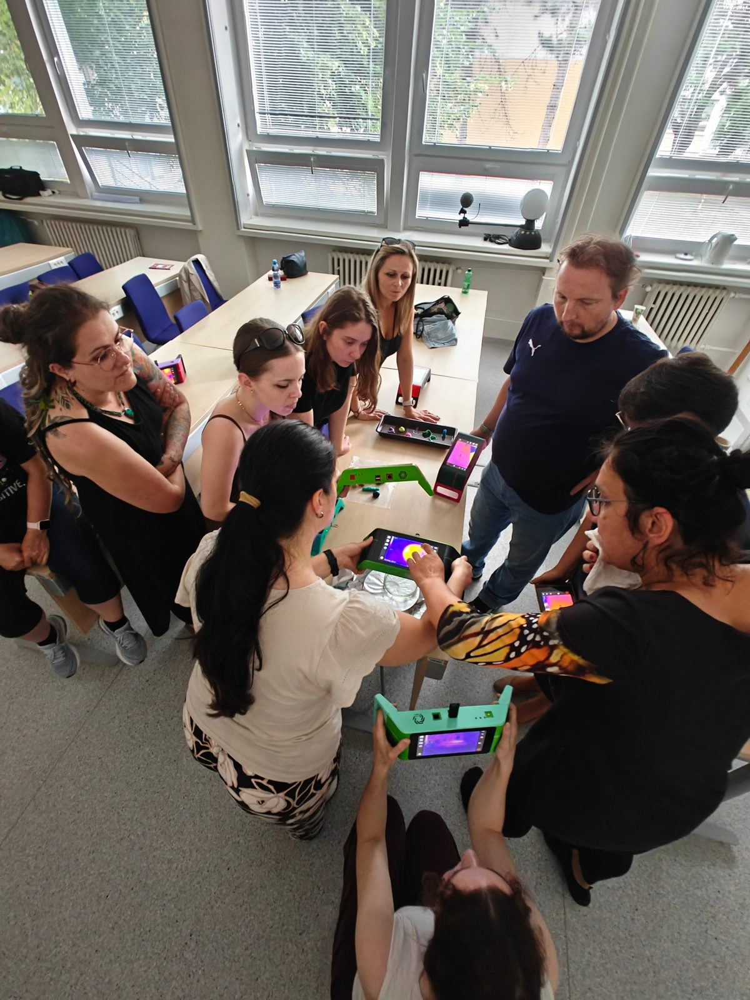
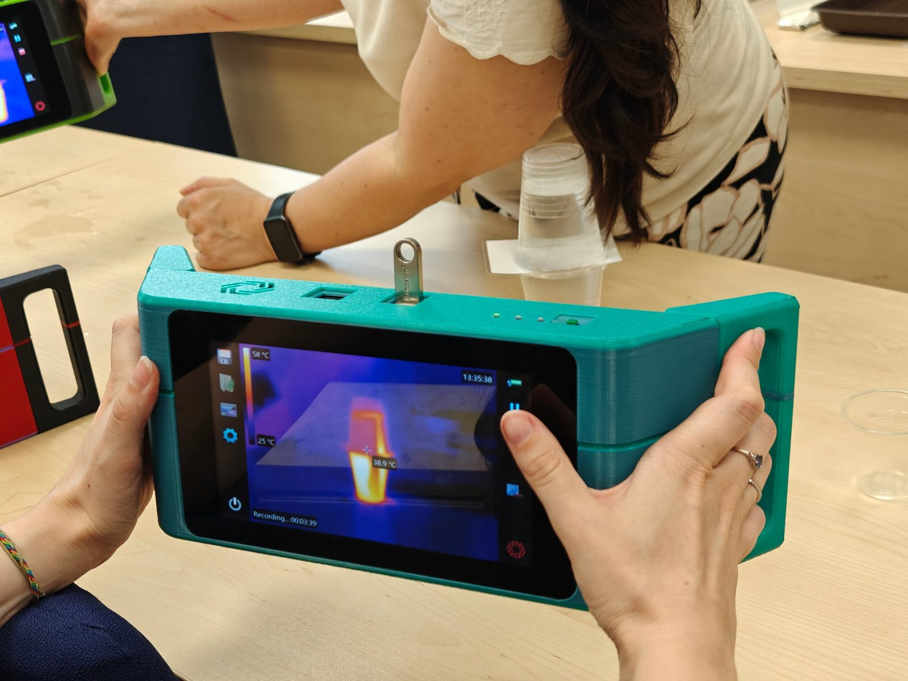
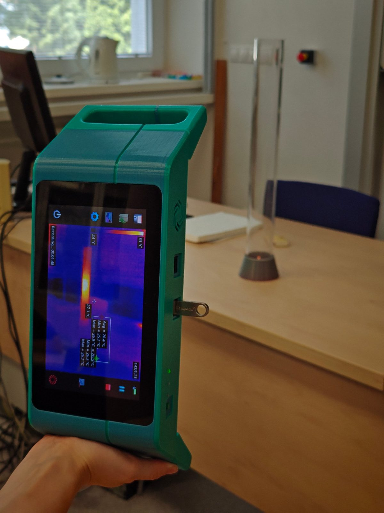
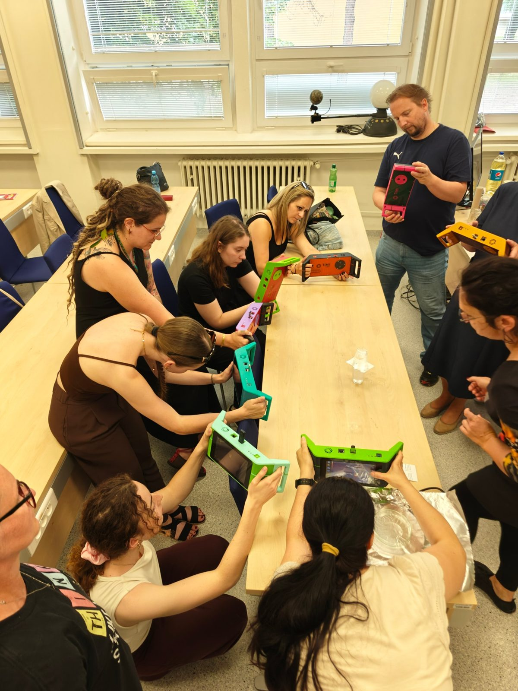
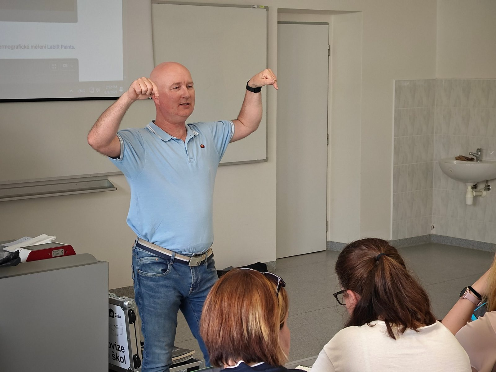

Ako premeniť teóriu na zážitok? Odpovede hľadalo 25 učiteľov na podujatí STEM v akcii – moderné metódy a digitálne trendy vo vyučovaní. Počas jedného popoludnia si vyskúšali štyri workshopy plné experimentov a praktických nápadov, ktoré môžu hneď preniesť do svojich tried.

Štyri workshopy
Experimenty s termokamerami
Termokamera zviditeľní to, čo oko nevidí – ohrev, ochladzovanie, trenie či vedenie tepla. Účastníci si vyskúšali, ako s ňou urobiť z tepelných javov názorné a pútavé pokusy.

Vizualizace proudění tekutin jednoduše
Prúdenie kvapalín a plynov je voľným okom neviditeľné. Pomocou termokamery ho však možno jednoducho zviditeľniť – teplá a studená tekutina sa na obraze zreteľne odlíšia, takže žiaci priamo vidia, ako a kam prúdi.

Fyzikálna prechádzka
Fyzika nie je len v učebnici a v laboratóriu. Účastníci vyšli von a fyzikálne veličiny merali priamo v teréne – s nápadmi, ako vyučovanie fyziky preniesť aj mimo triedy.
Laboratórium 2.0
Účastníci si vyskúšali experimentovanie v prostredí Coach a merania so senzormi, ktoré má v sebe každý smartfón. Ukázali sme, ako s nimi zbierať a spracovať údaje priamo na hodine.
Z podujatia


Ďakujeme
Ďakujeme kolegom zo Západočeskej univerzity v Plzni za inšpiratívne workshopy a všetkým učiteľom a študentom, ktorí prišli experimentovať s nami. Materiály z workshopov postupne doplníme v sekcii Materiály.
Nechcete prísť o ďalšie podujatie?
Pozvánky na workshopy a stretnutia klubu posielame e-mailom.